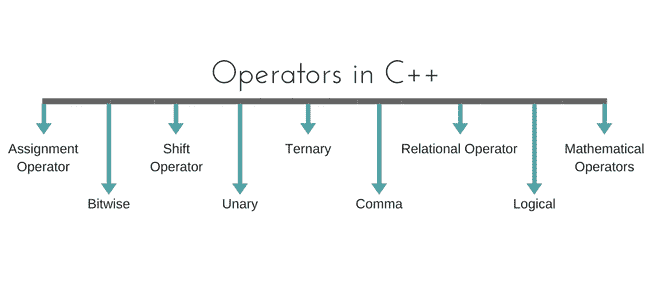

C++ 中的运算符
原文：https://www.studytonight.com/cpp/operators-and-their-types.php
运算符是特殊类型的函数，它接受一个或多个参数并产生一个新值。例如:加法(+)、减法(-)、乘法(*)等都是运算符。运算符用于对变量和常量执行各种操作。

运算符的类型
- 赋值运算符
- 数学运算符
- 关系运算符
- 逻辑运算符
- 按位运算符
- 移位运算符
- 一元运算符
- 三元算子
- 逗点算符
赋值运算符(=)
Operates ' = '用于赋值，它取右侧(称为右值)并将其复制到左侧(称为左值)。赋值运算符是唯一可以重载但不能继承的运算符。
数学运算符
有用于执行基本数学运算的运算符。加法(+)、减法(-)、分流(/)乘法(*)和模(%)是基本的数学运算符。模数运算符不能用于浮点数。
C++ 和 C 也使用速记符号来执行相同类型的运算和赋值。例，
int x=10;
x += 4 // will add 4 to 10, and hence assign 14 to X.
x -= 5 // will subtract 5 from 10 and assign 5 to x.
关系运算符
这些运算符建立操作数之间的关系。关系运算符有:小于()、小于或等于(<=), greater than equal to (> =)、等价(==)和不等价(！=).
您必须注意到赋值运算符是(=)，并且有一个关系运算符，表示等价的(==)。这两者互不相同，赋值运算符将值赋给任何变量，而等效运算符用于比较值，就像在 if-else 条件中一样，示例
int x = 10; //assignment operator
x=5; // again assignment operator
if(x == 5) // here we have used equivalent relational operator, for comparison
{
cout <
逻辑运算符
逻辑运算符是 AND (&&)和 OR (||)。它们用于将两个不同的表达式组合在一起。
如果两个语句使用“与”运算符连接，将考虑这两个语句的有效性，但是如果它们使用“或”运算符连接，则其中任何一个都必须有效。这些运算符主要用于循环(尤其是while循环)和决策。
按位运算符
它们用于将单个位转换成一个数字。它们只处理整数数据类型，如char、int和long，而不处理浮点值。
- 按位“与”运算符
& - 按位或运算符
| - 和逐位异或运算符
^ - 并且，按位非运算符
~
它们也可以用作速记符号，& =、|=、^=、~=等。
移位运算符
移位运算符用于移位任何变量的位。它有三种类型，
- 左移运算符
<< - 右移运算符
>> - 无符号右移位运算符
>>>
一元运算符
这些运算符只对一个操作数起作用。一元运算符很多，但使用最多的是递增++和递减--运算符。
其他一元运算符:地址为&，取消引用*，新增和删除，按位不~，逻辑不!，一元减-和一元加+。
三元算子
三元 if-else ? :是一个有三个操作数的运算符。
int a = 10;
a > 5 ? cout << "true" : cout << "false"
逗点算符
这用于分隔变量名和表达式。在表达式的情况下，生成并使用最后一个表达式的值。
例:
int a,b,c; // variables declaration using comma operator
a=b++, c++; // a = c++ will be done.